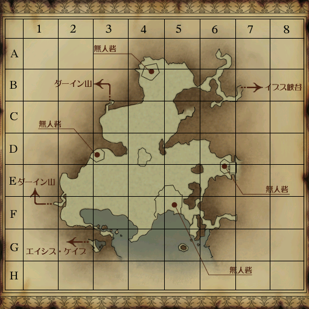

一覧釣りガイド：ミーリム海岸(War_Age)
ミーリム海岸(War_Age) の釣り場 16 か所（魚の出る位置 22）。
釣り場の地図

#1#2青い点が魚の出る位置、#番号が釣り場（3 匹以上）。点にマウスを合わせると魚の名前。
釣り場
地図の青い点が魚、赤がプレイヤーを襲うモンスターの出る位置。失敗マスはヒットゾーン 0・HP 満タンの魚のときのゲージに占める割合。
#1（魚 3 匹）
- 魚の数
- 3
- 広さ
- 33 m
- 再出現
- 3 分
- 魚の Lv
- 44.5〜88
釣れる魚
| 魚（出るたびに抽選） | 数 | おもなドロップ（1 匹あたり） | 失敗マス（スキル 30 / 60 / 90） |
|---|---|---|---|
| 海ヘビ Lv 44.5〜45（66.7%）／大デンキウナギ Lv 86〜88（33.3%） | 3 | ヘビの肉 10、ヘビの毒 3.7、ヘビの牙 1.7、ウナギ 1.7 | 58% / 28% / 9% |
近くの敵
プレイヤーを襲うモンスターは届かない。
#2（魚 3 匹）
- 魚の数
- 3
- 広さ
- 33 m
- 再出現
- 3 分
- 魚の Lv
- 44.5〜88
釣れる魚
| 魚（出るたびに抽選） | 数 | おもなドロップ（1 匹あたり） | 失敗マス（スキル 30 / 60 / 90） |
|---|---|---|---|
| 海ヘビ Lv 44.5〜45（66.7%）／大デンキウナギ Lv 86〜88（33.3%） | 3 | ヘビの肉 10、ヘビの毒 3.7、ヘビの牙 1.7、ウナギ 1.7 | 58% / 28% / 9% |
近くの敵
プレイヤーを襲うモンスターは届かない。
小さな釣り場（魚 1〜2 匹）
| 釣り場 | 魚 | 釣れる魚 | 再出現 | 近くの敵 |
|---|---|---|---|---|
| #3 | 2 | イプス バス Lv 10〜12（70%）／イクシオン ウォーター Lv 53〜54.5（20%）／そんなエサに俺様がクマ（10%、釣れない） 海ヘビ Lv 44.5〜45（66.7%）／大デンキウナギ Lv 86〜88（33.3%） | 3 分〜30 分 | なし |
| #4 | 2 | 海ヘビ Lv 44.5〜45（66.7%）／大デンキウナギ Lv 86〜88（33.3%） | 3 分 | なし |
| #5 | 1 | 宝箱 Lv 99（3%）／宝箱 Lv 81〜82（51%）／ガラクタ Lv 18〜20（21%）／ボロボロの宝箱 Lv 99（1%）／ボロボロの宝箱 Lv 81〜82（24%） | 1 時間 | なし |
| #6 | 1 | 宝箱 Lv 99（3%）／宝箱 Lv 81〜82（51%）／ガラクタ Lv 18〜20（21%）／ボロボロの宝箱 Lv 99（1%）／ボロボロの宝箱 Lv 81〜82（24%） | 1 時間 | なし |
| #7 | 1 | 海ヘビ Lv 44.5〜45（66.7%）／大デンキウナギ Lv 86〜88（33.3%） | 3 分 | なし |
| #8 | 1 | 海ヘビ Lv 44.5〜45（66.7%）／大デンキウナギ Lv 86〜88（33.3%） | 3 分 | なし |
| #9 | 1 | 海ヘビ Lv 44.5〜45（66.7%）／大デンキウナギ Lv 86〜88（33.3%） | 3 分 | なし |
| #10 | 1 | 海ヘビ Lv 44.5〜45（66.7%）／大デンキウナギ Lv 86〜88（33.3%） | 3 分 | なし |
| #11 | 1 | 海ヘビ Lv 44.5〜45（66.7%）／大デンキウナギ Lv 86〜88（33.3%） | 3 分 | なし |
| #12 | 1 | 海ヘビ Lv 44.5〜45（66.7%）／大デンキウナギ Lv 86〜88（33.3%） | 3 分 | なし |
| #13 | 1 | 海ヘビ Lv 44.5〜45（66.7%）／大デンキウナギ Lv 86〜88（33.3%） | 3 分 | なし |
| #14 | 1 | 海ヘビ Lv 44.5〜45（66.7%）／大デンキウナギ Lv 86〜88（33.3%） | 3 分 | なし |
| #15 | 1 | 海ヘビ Lv 44.5〜45（66.7%）／大デンキウナギ Lv 86〜88（33.3%） | 3 分 | なし |
| #16 | 1 | 海ヘビ Lv 44.5〜45（66.7%）／大デンキウナギ Lv 86〜88（33.3%） | 3 分 | なし |